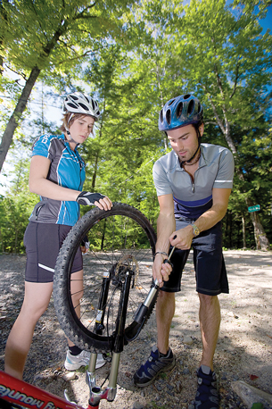

Module 3—Behaviour of Gases
Lesson 4—Molar Volume and the Ideal Gas Law

© 2008 Jupiterimages Corporation
 Get Focused
Get Focused
A flat tire can be a real problem when cycling. Not only does it take time to change the tire, but getting the inflation correct can be tricky. Riding on an underinflated tire decreases efficiency. It may also decrease your ability to steer around hazards in your path. Pinching the tire is one way to check the inflation of a tire, but more often a pressure gauge is used to get an accurate reading. Inflating a tire to the appropriate pressure involves adding air, but what quantity of gas is necessary for proper inflation?
In Lesson 3 you began to investigate the relationship between the chemical quantity of a gas (moles) and one of its measurable properties (volume). In Lessons 1 and 2 you investigated relationships between volume and pressure and between volume and temperature.
There is also the empirical relationship you may have already observed—adding more gas (increasing moles) will increase the pressure exerted by gas.
How can all of these relationships be combined to better explain and predict the relationship between quantity of gas and its measurable properties?
Essential Questions
-
What is molar volume?
-
What is the difference between a real gas and an ideal gas?
-
What relationship exists between pressure, volume, temperature, and moles of gas?
 Module 3: Lesson 4 Assignment
Module 3: Lesson 4 Assignment
You will complete the Module 3 Assignment 4 at the end of this lesson.
Remember that the questions that are not marked by the teacher provide you with the practice and feedback that you need to successfully complete this course. You should respond to all the questions and place those answers in your course folder.